Mesmo imposto t e mesma oferta nos dois painéis. Com demanda inelástica (à esquerda), a quantidade quase não cai e o peso morto é um triângulo estreito; com demanda elástica (à direita), a quantidade despenca e o peso morto é bem maior.
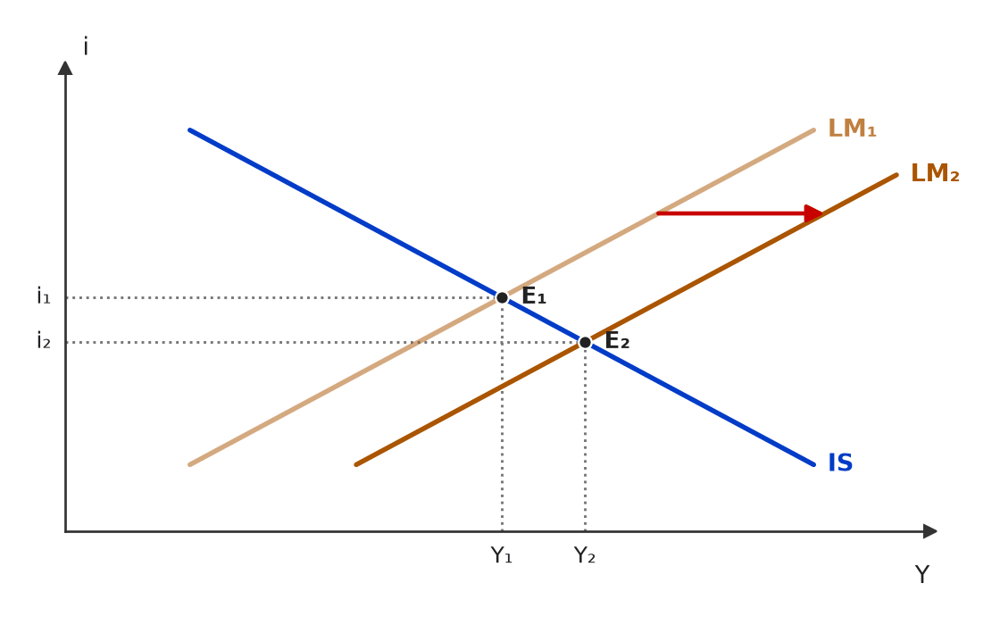
Corte de juros pela via monetária: a oferta de moeda aumenta e a LM desce para a direita (LM₁ → LM₂); os juros caem (i₁ → i₂) e a renda sobe (Y₁ → Y₂). Uma LM para cima e para a esquerda faria o contrário: juros maiores.

Menos imposto sobre o rendimento das aplicações eleva o retorno líquido de poupar: a oferta de fundos (poupança) se desloca para a direita (O₁ → O₂). Os juros caem (r₁ → r₂) e a quantidade de fundos poupados e investidos sobe (F₁ → F₂).

O corte de gastos reduz o déficit (ou amplia o superávit) e eleva a poupança pública: a oferta de fundos se desloca para a direita (O₁ → O₂). Os juros caem e o investimento privado AUMENTA (F₁ → F₂) — é o crowding out ao contrário.

O incentivo fiscal torna rentável investir mais a cada taxa de juros: a demanda por fundos se desloca para a DIREITA (D₁ → D₂). Os juros SOBEM (r₁ → r₂) e a quantidade de fundos poupados e investidos também sobe (F₁ → F₂).

Com o teto de juros abaixo do equilíbrio, os tomadores querem Fᴰ, mas os poupadores só ofertam Fˢ: vale o lado curto do mercado, e o volume de crédito — logo, o investimento — CAI de F* para Fˢ, com racionamento do excesso de demanda.
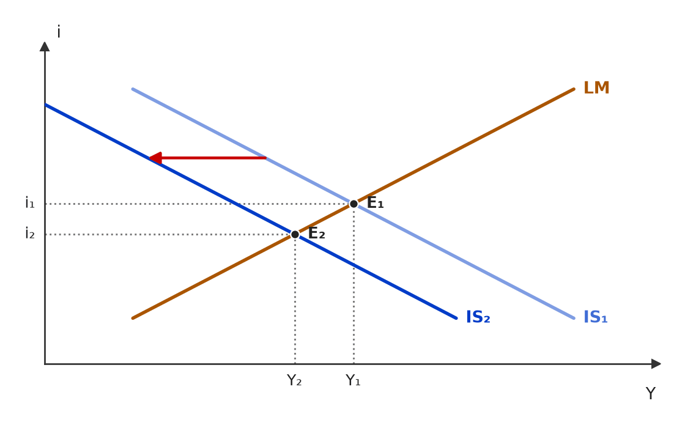
Alta de impostos = política fiscal contracionista: a IS se desloca para a esquerda (IS₁ → IS₂) ao longo da LM fixa; no novo equilíbrio, os juros caem (i₁ → i₂) e a renda também cai (Y₁ → Y₂).
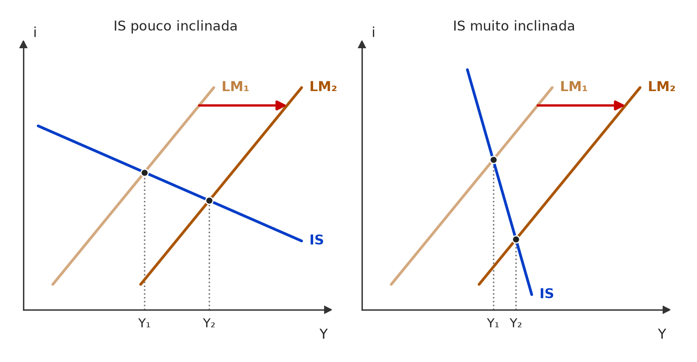
A mesma expansão monetária (LM₁ → LM₂, mesmo deslocamento horizontal nos dois painéis) rende muito mais renda quando a IS é pouco inclinada (investimento sensível aos juros) do que quando a IS é quase vertical: a eficácia depende das inclinações.
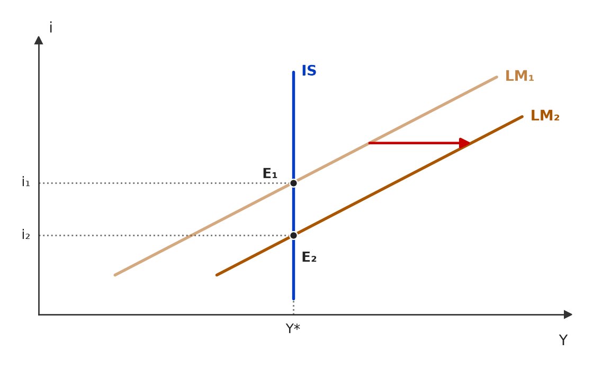
Com a IS vertical (investimento insensível aos juros), a expansão monetária desloca a LM para a direita (LM₁ → LM₂) e só derruba os juros (i₁ → i₂): a renda fica parada em Y* — eficácia nula da política monetária.
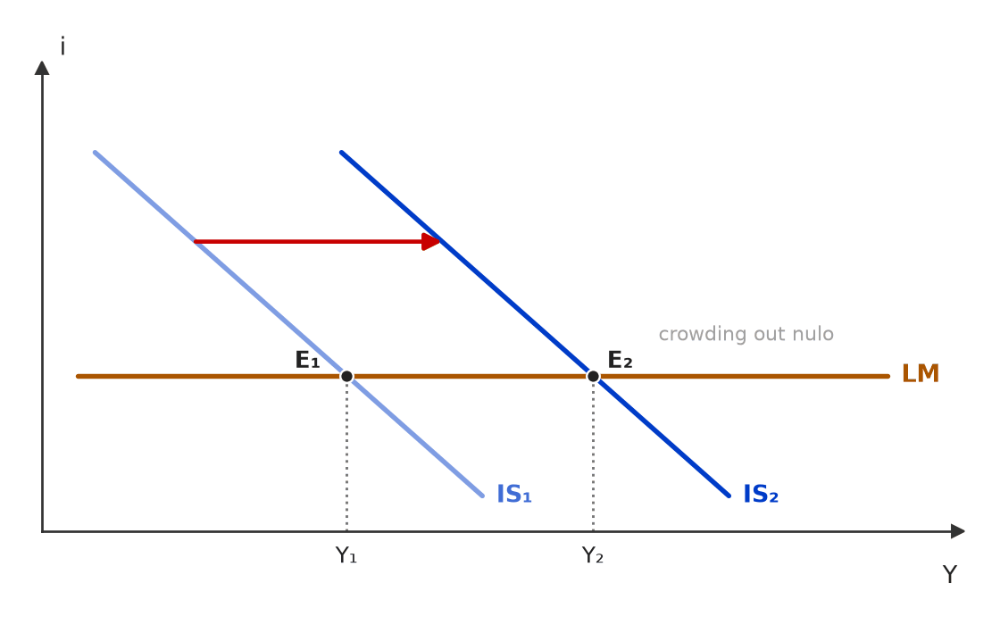
Com a LM horizontal (armadilha da liquidez), a expansão fiscal leva a IS para a direita (IS₁ → IS₂) sem mexer nos juros: o investimento privado não é expulso, o crowding out é nulo e a renda sobe o efeito multiplicador inteiro (Y₁ → Y₂).
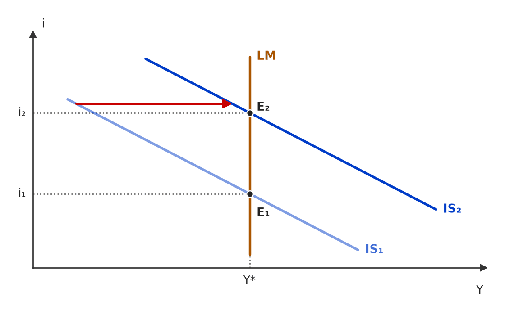
Com a LM vertical (demanda por moeda insensível aos juros), a expansão fiscal leva a IS para a direita (IS₁ → IS₂), mas só eleva os juros (i₁ → i₂): a renda fica em Y* — crowding out total e política fiscal ineficaz.

A arrecadação R = t × base é zero com alíquota 0% e com 100%, e máxima em t*. À esquerda de t*, alíquota maior = arrecadação maior; só à direita (zona proibitiva) a relação fica inversa. Por isso a mesma receita R₁ pode ser obtida com uma alíquota baixa (t₁) ou alta (t₂).

Expansão monetária: com mais moeda, a LM desce para a direita (LM₁ → LM₂); ao longo da IS, que não se move, os juros caem (i₁ → i₂) e o produto sobe (Y₁ → Y₂).

Com a oferta agregada vertical no produto de pleno emprego, a expansão fiscal desloca a demanda agregada (DA₁ → DA₂) e todo o ajuste ocorre no nível de preços (P₁ → P₂): o produto continua em Yₚ.

Com o investimento autônomo dado, a alta da propensão a poupar gira a reta de poupança (S₁ → S₂): a renda de equilíbrio cai (Y₁ → Y₂) e a poupança realizada volta ao mesmo nível do investimento — ninguém consegue poupar mais no agregado.
aviso: rótulo 'E₁' é cortado pela curva I
aviso: rótulo 'E₁' é cortado pela curva S1
aviso: rótulo 'E₂' é cortado pela curva I
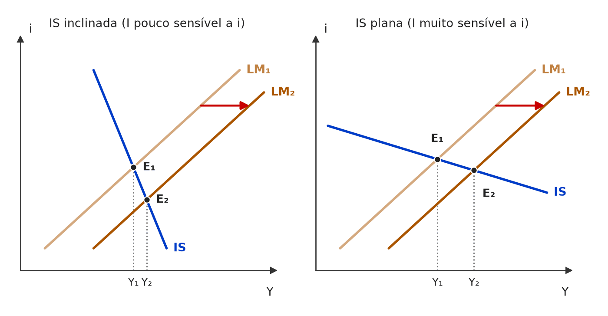
O mesmo deslocamento da LM (LM₁ → LM₂) rende pouco produto quando a IS é inclinada e muito quando ela é plana: com o investimento sensível aos juros, a pequena queda de i vira grande aumento de Y.
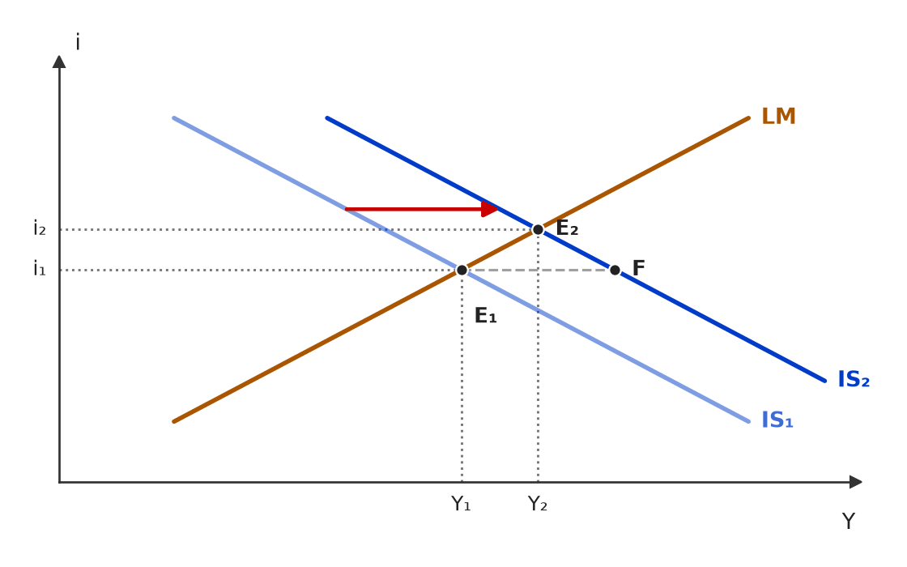
A expansão fiscal desloca a IS para a direita (IS₁ → IS₂). Com juros fixos em i₁, a renda iria até F (multiplicador pleno); como a renda maior eleva a demanda por moeda e os juros sobem para i₂, o investimento recua e a renda para em Y₂ — a distância E₂–F é o crowding out.
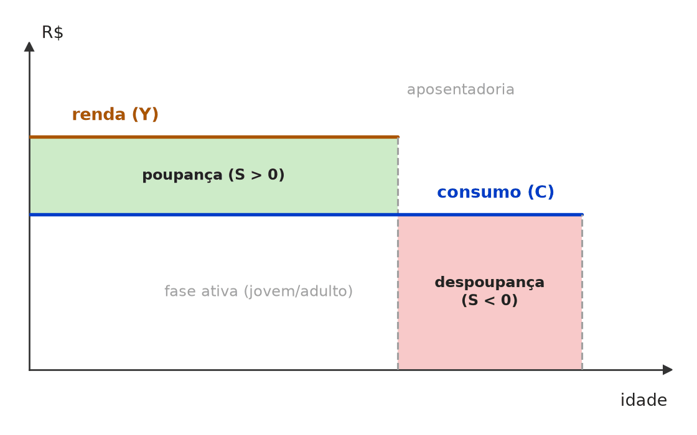
No ciclo de vida, a renda (Y) existe só na fase ativa, mas o consumo (C) é plano: o trabalhador poupa enquanto trabalha (área verde) e despoupa na aposentadoria (área vermelha), consumindo o patrimônio acumulado. As duas áreas são iguais.

Partindo de A (u = uₙ, inflação esperada de 2%), a expansão leva a B: desemprego menor à custa de mais inflação, ao longo da CPCP₁. Quando as expectativas se ajustam, a curva de curto prazo sobe (CPCP₂) e o desemprego volta a uₙ em C, com inflação maior: no longo prazo só resta a vertical CPLP.
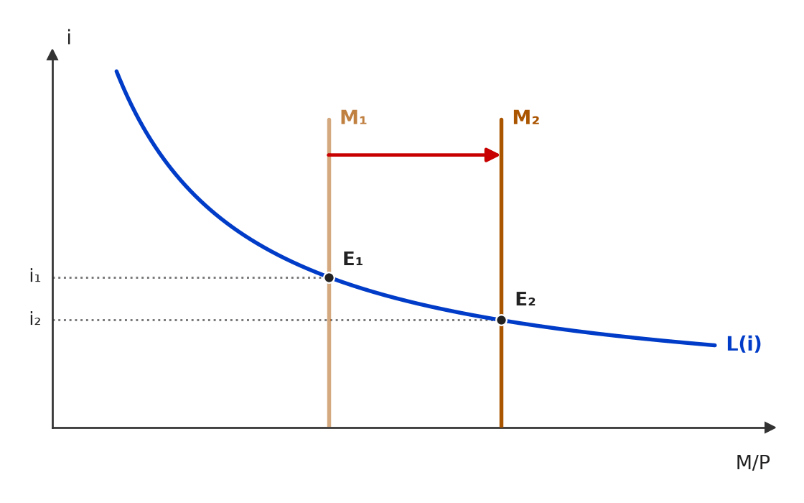
Em Keynes, a taxa de juros se forma no mercado de moeda: a oferta de moeda (vertical, fixada pelo Banco Central) cruza a preferência pela liquidez L(i). Mais moeda (M₁ → M₂) reduz os juros de i₁ para i₂; poupança e investimento não aparecem no gráfico.
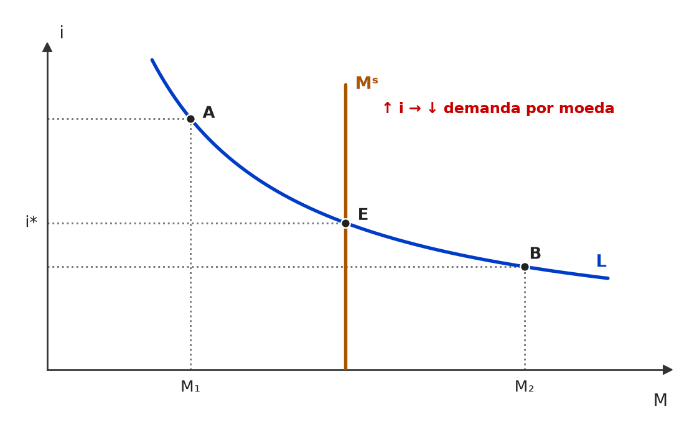
A demanda por moeda (preferência pela liquidez, L) é negativamente inclinada: em A, com juros altos, retém-se pouca moeda (M₁); em B, com juros baixos, muita (M₂). O juro de equilíbrio i* sai do cruzamento de L com a oferta de moeda Mˢ, fixada pelo Banco Central.
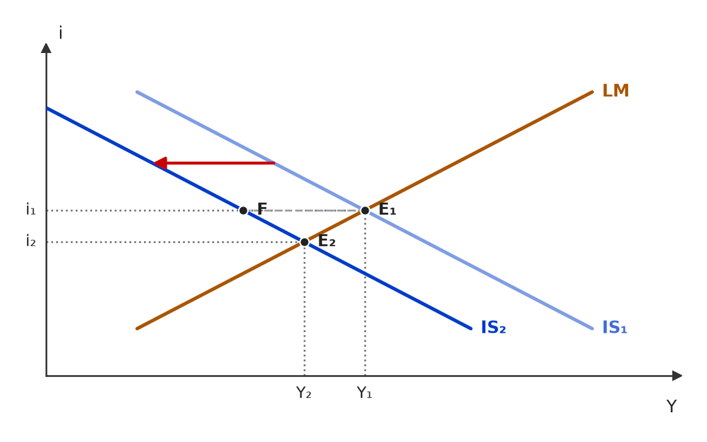
O aumento de impostos desloca a IS para a esquerda (IS₁ → IS₂). Se os juros ficassem em i₁, a renda cairia até F; como eles caem para i₂, parte do investimento volta e a renda para em Y₂ — a queda de i amortece, mas não anula, a contração.
aviso: rótulo 'F' é cortado pela curva ref
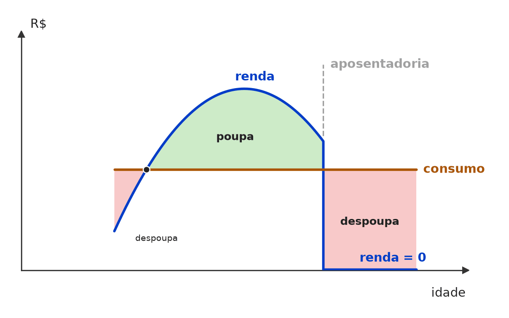
Ciclo da vida: a renda tem forma de corcova e zera na aposentadoria; o consumo fica estável. O jovem e o idoso despoupam (vermelho); o adulto em idade ativa poupa (verde). Transferir renda do jovem-adulto que poupa para o idoso que despoupa reduz a poupança agregada.
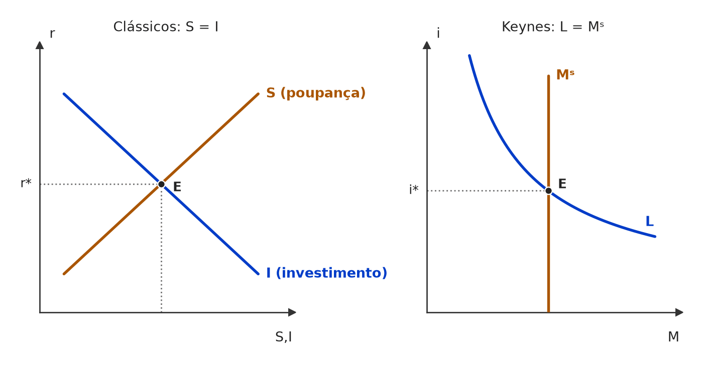
À esquerda, a teoria clássica: o juro real r é o preço que iguala poupança (S) e investimento (I) no mercado de fundos emprestáveis. À direita, Keynes: o juro i é fenômeno monetário, fixado pelo encontro da preferência pela liquidez (L) com a oferta de moeda (Mˢ).

Equilíbrio simultâneo nos mercados de bens (IS) e monetário (LM), com produto Y* e taxa de juros i*.
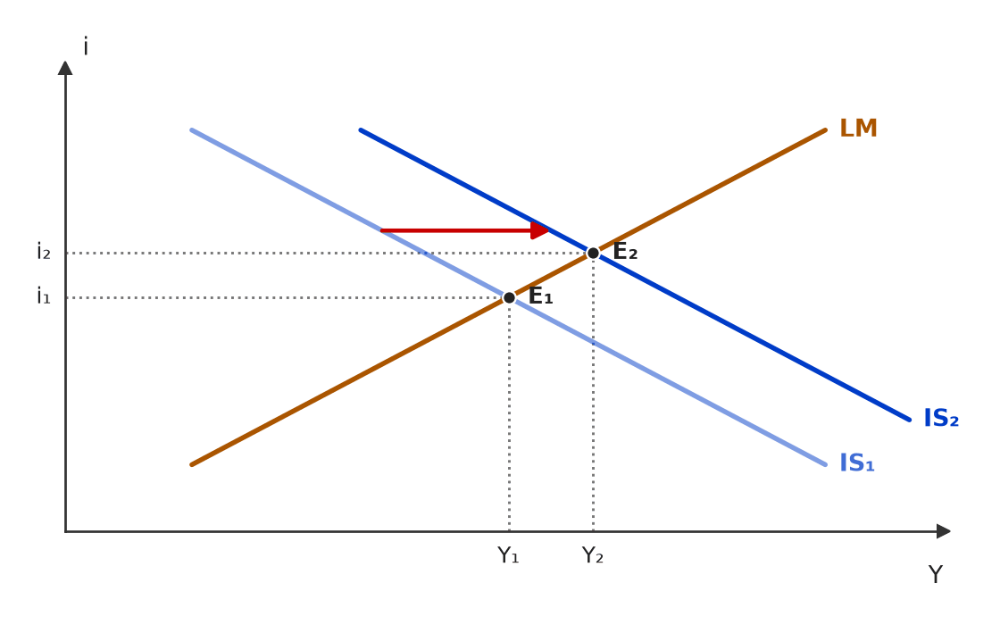
Mais gasto autônomo desloca a IS para cima e para a direita (IS₁ → IS₂); com a LM positivamente inclinada, o novo equilíbrio tem renda maior (Y₂ > Y₁) e juros maiores (i₂ > i₁).
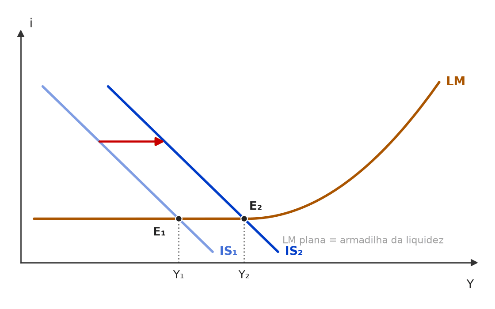
Na armadilha da liquidez, a LM é horizontal: a expansão fiscal (IS₁ → IS₂) eleva a renda de Y₁ para Y₂ sem elevar os juros — não há crowding out e o multiplicador opera por inteiro.

Superávit fiscal maior = mais poupança pública: a oferta de fundos (S) desloca-se para a direita, os juros caem (r₁ → r₂) e a quantidade de fundos que financia o investimento privado aumenta (F₁ → F₂) — crowding in.
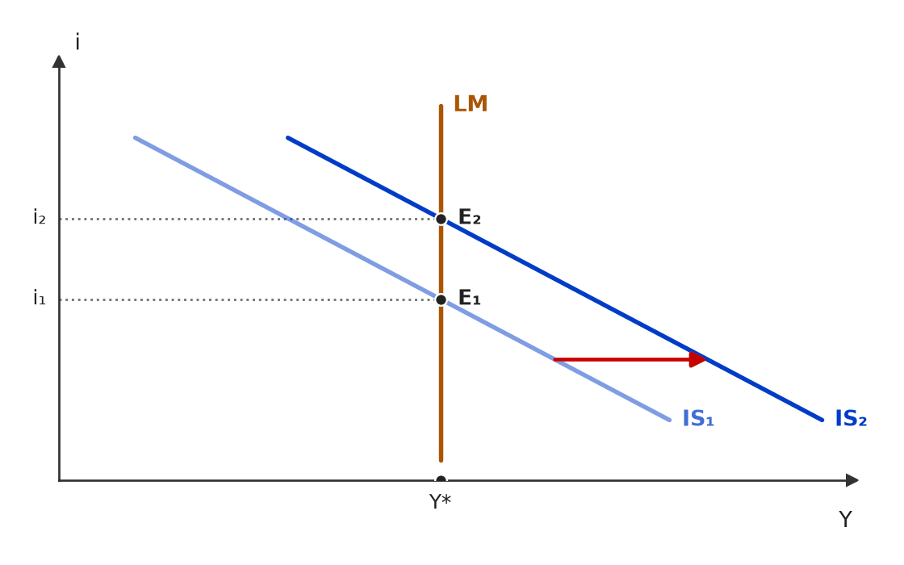
Com a demanda por moeda insensível aos juros, a LM é vertical: a expansão fiscal (IS₁ → IS₂) só eleva os juros (i₁ → i₂), e a renda fica em Y* — crowding out total, eficácia fiscal nula.
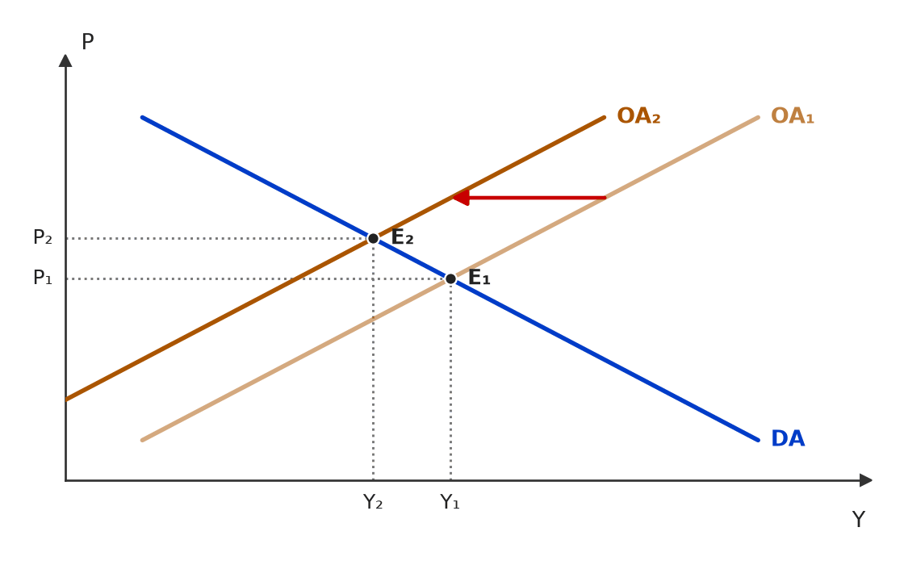
O choque adverso de oferta desloca a OA para cima/esquerda (OA₁ → OA₂) ao longo da mesma DA: o produto cai (Y₂ < Y₁) e o nível de preços sobe (P₂ > P₁) — estagflação, não desinflação.
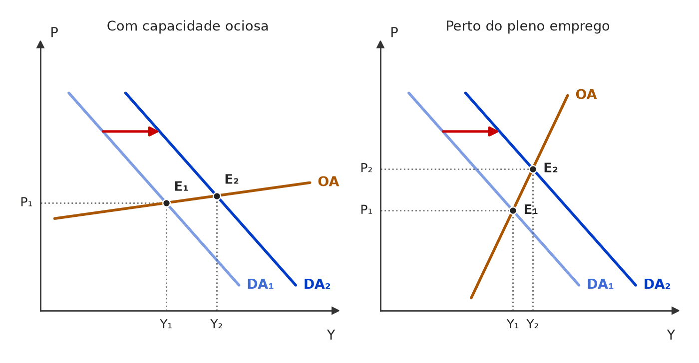
A mesma expansão da demanda (DA₁ → DA₂) em dois cenários. Com capacidade ociosa, a OA de curto prazo é plana (elástica): o estímulo vira sobretudo produto. Perto do pleno emprego, a OA é íngreme: o estímulo vira sobretudo preços.

A alta de juros leva a economia de A para B ao longo da CPCP₁: a inflação cai, mas o desemprego sobe acima de uₙ. Com expectativas adaptativas, a inflação esperada recua aos poucos, a curva de curto prazo desce para CPCP₂ e a economia volta a uₙ em C — o desemprego extra foi só de curto prazo.

Com a oferta agregada vertical (inelástica a preços), a expansão da demanda de DA₁ para DA₂ só eleva os preços: o produto fica em Yₚ e o desemprego não sai de uₙ. Traduzida para o plano inflação × desemprego, a mesma economia dá uma curva de Phillips vertical, sem trade-off.

A expansão fiscal financiada por dívida desloca a IS para a direita (IS₁ → IS₂). Se os juros ficassem em i₁, a renda iria até Y′; como a demanda por fundos eleva os juros a i₂, parte do investimento privado é deslocada e a renda só chega a Y₂ — a distância entre Y₂ e Y′ é o crowding out.
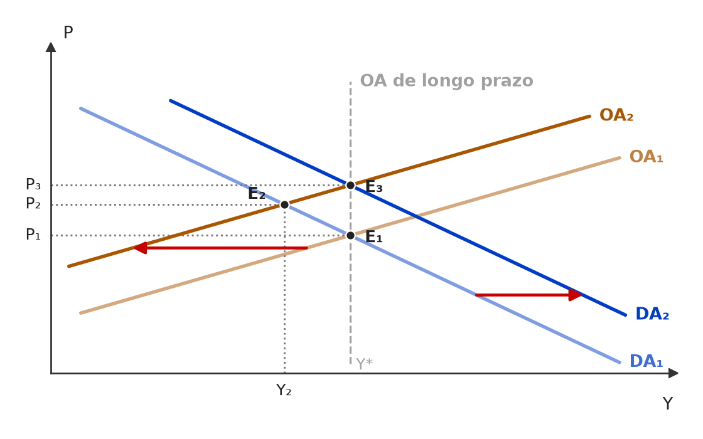
O choque adverso leva a economia de E₁ para E₂ (OA₁ → OA₂): os preços sobem e o produto cai abaixo do potencial Y*. Acomodar é levar a DA para a direita (DA₁ → DA₂): o produto volta a Y* em E₃, mas com preços ainda mais altos (P₃ > P₂ > P₁).
aviso: rótulo 'E₁' é cortado pela curva DA1
aviso: rótulo 'E₂' é cortado pela curva DA1
aviso: rótulo 'E₃' é cortado pela curva DA2

Aperto monetário: para sustentar juros mais altos, o Banco Central enxuga liquidez e a LM sobe para a esquerda (LM₁ → LM₂); os juros sobem (i₁ → i₂) e o produto cai (Y₁ → Y₂).

A expansão monetária leva a economia de A para B ao longo da curva de curto prazo CPCP₁. Com a inflação esperada revista para cima, quem se desloca é a CPCP (de CPCP₁ para CPCP₂); a CPLP fica parada, vertical em uₙ, e a economia volta ao desemprego natural em C, com inflação maior.
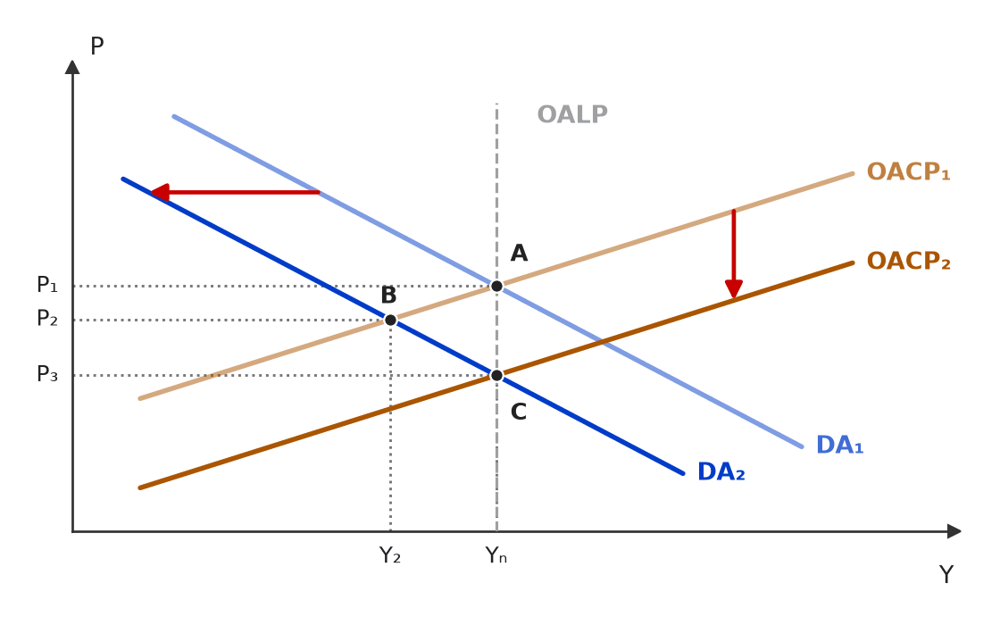
A contração da demanda (DA₁ → DA₂) leva a economia de A para B: produto abaixo de Yₙ (desemprego acima da taxa natural) e preços menores. Com salários nominais em queda, a OACP desce (OACP₁ → OACP₂) até C, de volta a Yₙ, com nível de preços mais baixo.
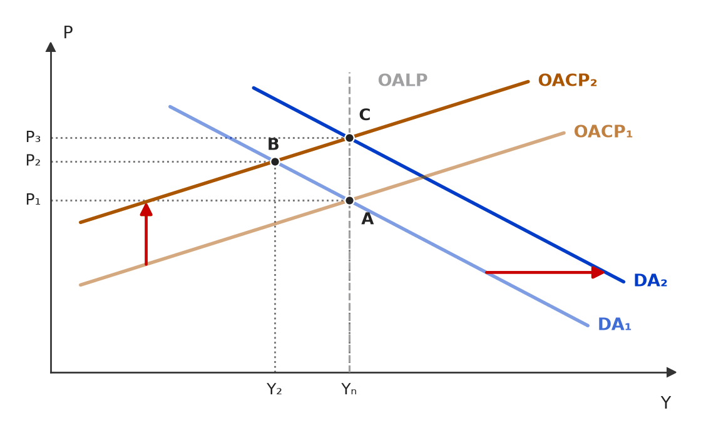
O choque adverso desloca a OACP para cima (OACP₁ → OACP₂): de A para B, o produto cai e os preços sobem (estagflação). A política expansionista leva a DA de DA₁ a DA₂ e a economia a C: produto de volta a Yₙ, mas com o nível de preços ainda mais alto.

O imposto sobre os rendimentos das aplicações reduz o retorno líquido de poupar: a oferta de fundos (S) desloca-se para a ESQUERDA, os juros sobem (r₁ → r₂) e o investimento cai (F₁ → F₂).

Com M fixo, a LM não se move; o corte de gastos leva a IS para a esquerda (IS₁ → IS₂) e o novo equilíbrio E₂ tem renda e juros menores (Y₂ < Y₁, i₂ < i₁).
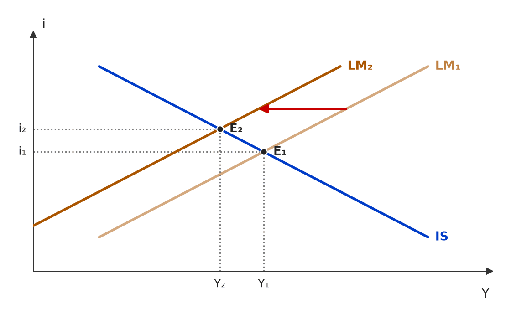
A incerteza eleva a demanda por moeda; com M fixo, a LM sobe para a esquerda (LM₁ → LM₂): os juros de equilíbrio sobem (i₂ > i₁) e a renda cai (Y₂ < Y₁).
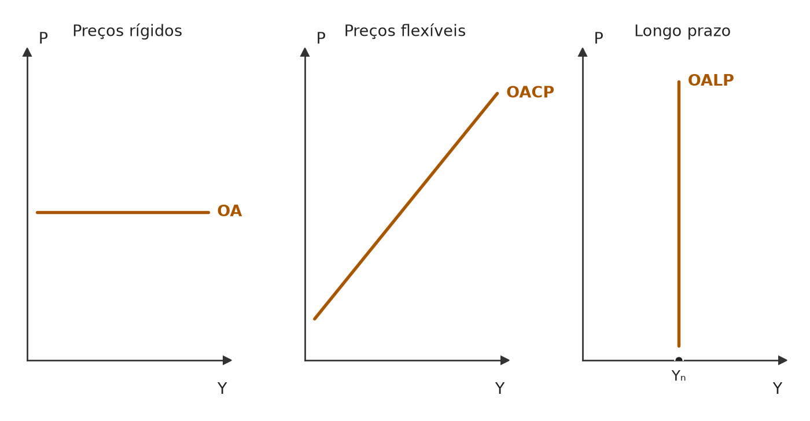
Conforme o horizonte e a flexibilidade de preços, a oferta agregada é horizontal (preços rígidos), positivamente inclinada (curto prazo, rigidez parcial) ou vertical (longo prazo, em Yₙ). Em nenhum caso ela é negativamente inclinada: inclinação negativa no plano (Y, P) é a da demanda agregada.

Curva de Laffer da senhoriagem: a receita S = μ·(M/P) sobe com a inflação até π* e depois cai, porque o público foge da moeda. O mesmo déficit S̄ é financiado em π₁ ou em π₂; em regime (μ = π + g), o ponto de inflação alta exige expansão da base MAIOR, nunca menor.
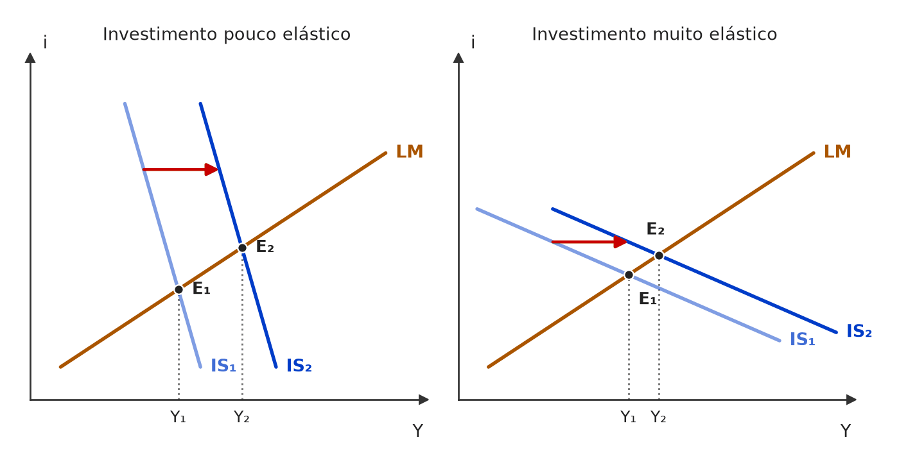
O mesmo aumento de G desloca as duas IS na mesma distância. Com investimento pouco sensível aos juros (IS íngreme, à esquerda), a renda sobe muito; com investimento muito sensível (IS plana, à direita), a alta dos juros expulsa investimento e Y quase não sai do lugar (crowding out).
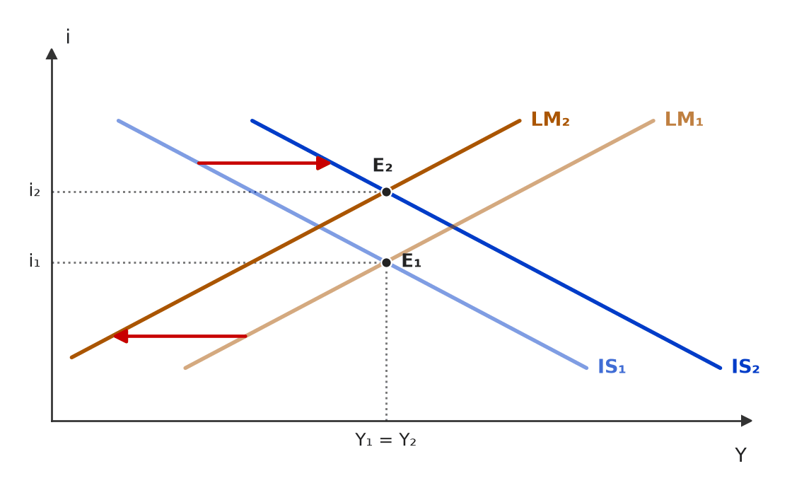
Um dos cenários possíveis: G ↑ leva a IS para a direita e M ↓ leva a LM para a esquerda com a mesma força; os juros sobem com certeza (i₂ > i₁), mas a renda fica igual (Y₂ = Y₁). Com deslocamentos de tamanhos diferentes, Y subiria ou cairia.
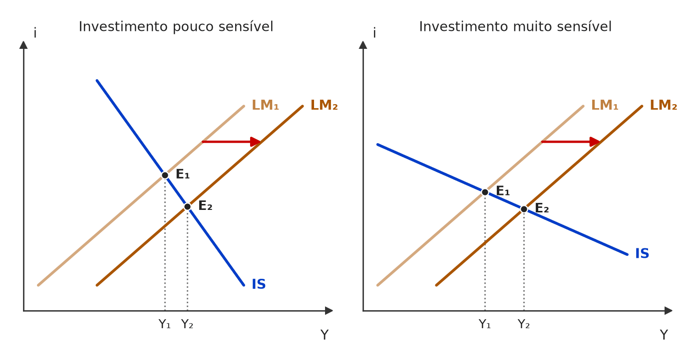
A mesma expansão monetária (LM₁ → LM₂) derruba os juros nos dois painéis. Com investimento pouco sensível (IS íngreme), a renda quase não reage; com investimento muito sensível (IS plana), a queda dos juros vira grande aumento de Y.
aviso: [painel 2] rótulo 'E₁' é cortado pela curva IS
aviso: [painel 2] rótulo 'E₂' é cortado pela curva IS

O gasto público desloca a IS para a direita (IS₁ → IS₂). Com juros constantes em i₁, a renda iria até Y′ (multiplicador pleno); como a LM não se move, os juros sobem para i₂, o investimento privado cai e a renda para em Y₂. A distância Y₂–Y′ é o crowding out.
aviso: rótulo 'E₁' é cortado pela curva H
aviso: rótulo 'A' é cortado pela curva H

A oferta de reservas é vertical na quantidade que o BC provê e vira horizontal na taxa de redesconto (rᵈ), porque ali o BC empresta quanto se pedir. Se a demanda por reservas sobe de D₁ para D₂, a taxa do mercado sobe de i₁ até rᵈ e para: o redesconto é o teto.